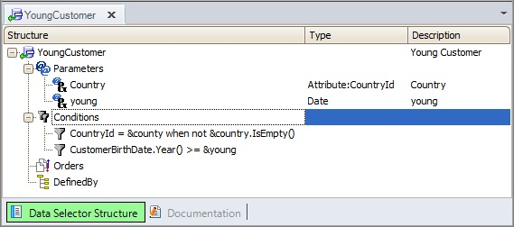

Indicates a list of conditions that must be matched by the data in order to be processed within the level —For Each command or Data provider Group statement—. The conditions are boolean expressions, simples or very complex nested ones. It is possible to specify more than one Where clause. In this case, the conditions are evaluated as if they were separated by an 'and' operator. Syntax
Where: <condition> specifies any valid logical expression to condition the data retrieval. It can be a compound condition, using 'and', 'or' and 'not' logical operators. Those attributes appearing in the boolean condition may be either from the for each Base Table or from its Extended Table. In some cases, attributes that do not belong to the extended table can be included. See Filters As Hint for more details. The occurrence of n where clauses is equivalent to the occurrence of only one where clause, with the boolean conjunction of the conditions.
<constraint> is a <condition> that specifies when the where clause will apply. In client/server platforms, the When clause of each where clause is first evaluated, and if its condition is met, the filter specified by the where clause will be applied. See more about When clause. [not]<attribute> in <DataSelectorName>( [<parameterList>]) The Data Selector object determines a query itself. This means that a SELECT sentence will be generated for the Data selector definition, which will be a different and independent SELECT from the level one—For Each command or Data provider Group statement—. Thus, it will return a collection of values corresponding to the same definition as the <attribute>. This <attribute> must belong to the extended table of the Data Selector base table. See more: Data Selectors in For Each command. Conditions as propertiesThe same concept but with a slightly different syntax (for example, without the 'where' keyword) applies to Data Selectors, as well as 'Conditions' section of Web panels, Panel object and Work With for Smart Devices object, as well as grid 'Conditions' property. Optimization<Condition> in the where clause constraints the dataset that is obtained. However, more than that is meant here. There is a great difference between a full scan table access and an index-optimized random access. If applying some rules of logic, GeneXus determines that the order clause (or the primary key order) is compatible with the where condition(s), it optimizes the access to the table using indices and not doing a full table scan. This is obviously the desired behavior whenever possible. The conditions that can be optimized are the ones that use the operators: '>', '>=', '=', '<' and '<='. If the Where condition is optimized, it will appear as "Navigation Filter" in the Navigation report. Otherwise, it will appear as "Constraint". Be sure that the conditions used in the where clause respect type definitions. If this is not the case, an error message indicating a type mismatch will be displayed. See more about Conditional Orders and Filters. Examples1. Suppose you need to print the customer names for those customers who were born in a certain country and after a certain date.
For Each Customer
Where CountryId = &CountryId
Where CustomerBirthDate.year() >= &youngDate
print youngCustomer //printblock with: CustomerName
EndFor
Note the code is valid only as of GeneXus X Evolution 3 because you have included the Base Transaction clause in order to specify the base table. Remember this is not mandatory, and you could not include it. In such a case, the code will be valid for previous GeneXus versions. CountryId, CustomerBirthDate, and CustomerName belongs to CUSTOMER extended table. Note you have not specified an order. This will affect the performance as you can see in Conditional Orders and Filters. 2. Now suppose &CountryId is set by the end-user, by means of a web panel, for instance. As the user can let the variable empty, you need the filter will not be applied in that case:
for each Customer
where CountryId = &CountryId when not &CountryId.lsEmpty()
where CustomerBirthDate.year() >= &youngDate
print youngCustomer // printblock with: CustomerName
endfor
3. If you need in several objects to filter the young customers of a certain country, probably you would have created a Data selector in order to define that query:  Thus, the previous for each would be: for each Customer where CustomerId in YoungCustomer( &CountryId, &youngDate ) print youngCustomer // printblock with: CustomerName endfor 4. Finally, you need to print the countries for which you have more than one hundred customers: for each Country where Count( CustomerName ) > 100 print countryInfo //printblock with: CountryName endfor Note the For each base table is now COUNTRY. ScopeCommands: For Each command, Xfor Each command, Xfor First command, Data provider Group statement See AlsoConditional Orders and Filters
| |||||||||||||||||||||||
| Backlinks | ||
| Data provider Group statement | ||
| For Each command | Toc:GeneXus - Table of contents | Inline Formulas within a contextual table |
| Order Clause Specification | When clause | Xfor Each command |
| Xfor First command |